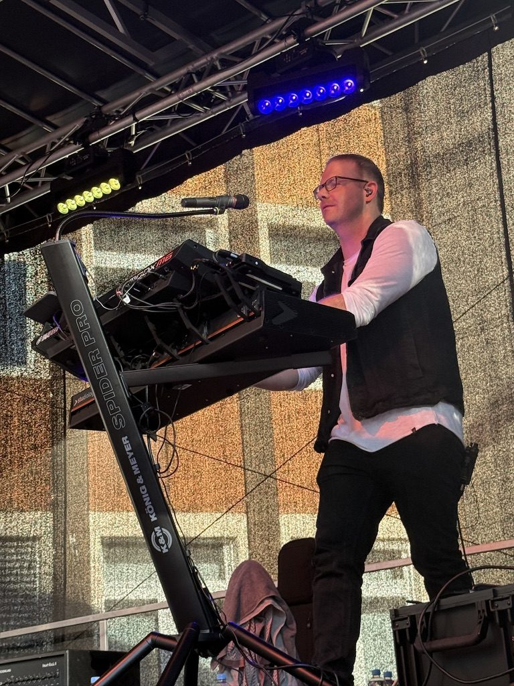
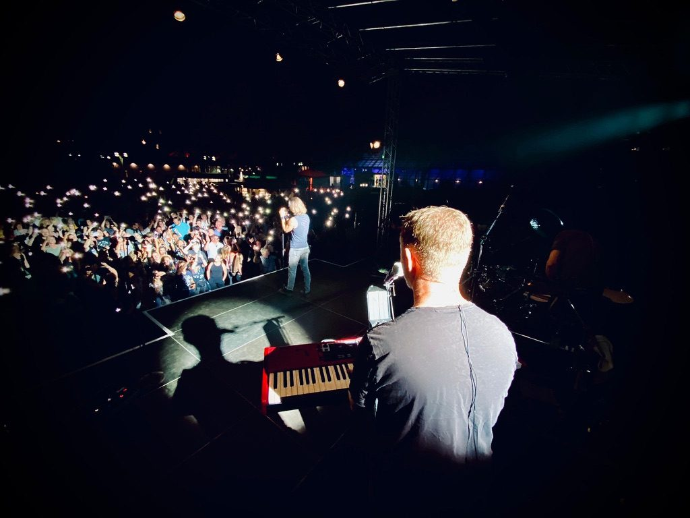

Keyboarder · Sound-Designer · IngenieurKeyboardist · Sound designer · Engineer
Sounds und Halterungen, die live funktionieren. Sounds and mounts that work on stage.
Für Keyboarder in Coverbands: fertig programmierte Coversounds für dein Keyboard, passgenaue Tablet-Halterungen und Workshops, in denen du dein Setup in den Griff bekommst. Von einem, der seit 1996 selbst auf der Bühne steht. For cover band keyboardists: ready-to-play cover sounds for your keyboard, custom-fit tablet mounts and workshops that get your rig under control. From someone who has been playing live since 1996.

Kennst du das?Sound familiar?
Die Probleme, die ich von der Bühne kenne – und meine LösungenProblems I know from the stage – and how I solve them
Zu Hause klingt der Sound super – im Bandmix geht er unter.Sounds great at home – gets lost in the band mix.
Meine Sounds programmiere ich im Bandkontext: Lautstärke zwischen den Songs abgestimmt, Frequenzen so, dass sie sich gegen Gitarre und Bass durchsetzen.I build my sounds in a band context: levels matched between songs, voiced to cut through guitar and bass.
Zu den Coversounds →Browse cover sounds →40 Songs in vier Wochen – und jeder braucht eigene Sounds.40 songs in four weeks – each needing its own sounds.
Statt stundenlang zu programmieren: Einzelsongs oder komplette Sets laden und direkt losspielen. Splits und Layer sind schon gesetzt.Skip the hours of programming: load single songs or complete sets and play. Splits and layers are already set up.
Beliebteste Songs →Most popular songs →Noten, Setlist, Mixer-App – und kein Platz am Keyboard.Charts, setlist, mixer app – and no room on the keyboard.
Meine Tablet-Halterungen sind für dein Keyboard-Modell konstruiert, quer und hoch nutzbar, für iPad und Samsung.My tablet mounts are designed for your specific keyboard model, portrait or landscape, for iPad and Samsung.
Zu den Halterungen →See the mounts →Neues Keyboard – und die alten Sounds passen nicht mehr.New keyboard – and your old sounds don't fit anymore.
Beim Umstieg helfe ich im Workshop. Und für Kronos → Nautilus gibt es meinen kostenlosen Multisample-Mapper.I help you switch in a workshop. And for Kronos → Nautilus there's my free multisample mapper.
Kostenlose Tools →Free tools →CoversoundsCover sounds
Die Songs, die deine Band wirklich spieltThe songs your band actually plays
Deutsche Partyklassiker und internationale Hits – fertig programmiert für dein Keyboard. Gerade das deutsche Repertoire findest du so sonst kaum. German party classics and international hits – ready to play on your keyboard.
Für dein KeyboardFor your keyboard


Tablet-HalterungenTablet mounts
Dein Tablet genau da, wo du es brauchstYour tablet exactly where you need it
Selbst konstruiert, selbst gedruckt, auf der eigenen Bühne getestet.Designed, printed and stage-tested by me.
- Passgenau für über 30 Keyboards von 8 HerstellernCustom fit for more than 30 keyboards from 8 brands
- Quer und hoch nutzbar – für Noten, Setlist oder Mixer-AppPortrait or landscape – for charts, setlist or mixer app
- Für iPad und Samsung TabletsFor iPad and Samsung tablets
- Konstruiert vom Maschinenbau-Ingenieur, gefertigt in HerdeckeDesigned by a mechanical engineer, made in Herdecke, Germany
Warum ichWhy me
Von einem Live-Keyboarder – für Live-KeyboarderFrom a live keyboardist – for live keyboardists


Ich spiele seit 1996 Keyboard in Bands, aktuell bei der Coverband Covernatixx. Ich kenne das Problem aus erster Hand: Ein Preset klingt im Kopfhörer großartig und live dünn, grell oder gar nicht. I've played keyboards in bands since 1996, currently with the cover band Covernatixx. I know the problem first-hand: a preset sounds great in headphones and thin, harsh or inaudible on stage.
Als Maschinenbau-Ingenieur (M. Eng.) denke ich in Systemen: Jeder Sound ist auf Lautstärke, Frequenzgang und Spielbarkeit im Live-Einsatz optimiert – und jede Halterung auf Stabilität am konkreten Keyboard. As a mechanical engineer (M. Eng.) I think in systems: every sound is optimised for level, frequency response and playability on stage – and every mount for stability on your specific keyboard.
Workshops & Coaching
Dein Keyboard, dein Setup – ich zeige dir, wie's gehtYour keyboard, your rig – I'll show you how
Ohne Fachchinesisch und mit Geduld – auch wenn Technik nicht dein Lieblingsthema ist.No jargon, plenty of patience – even if tech isn't your favourite topic.
Einzel-Coaching1:1 coaching
Online oder vor Ort: Sounds laden, Setlisten anlegen, Splits bauen, Keyboard-Wechsel – genau für dein Setup.Online or in person: loading sounds, building setlists and splits, switching keyboards – tailored to your rig.
Online-GruppenworkshopOnline group workshop
Kompakte Themen-Workshops, z. B. „Yamaha MODX/Montage – Sounds laden, importieren & organisieren“.Compact topic workshops, e.g. "Yamaha MODX/Montage – loading, importing & organising sounds".
Sound nach WunschCustom sounds
Dir fehlt ein bestimmter Sound? Ich programmiere ihn für dein Keyboard.Missing a specific sound? I'll program it for your keyboard.
Google-Bewertungen · 5 von 5 SternenGoogle reviews · 5 out of 5 stars
Was andere Keyboarder sagenWhat other keyboardists say
Thorsten war sofort bereit, den Sound, den ich wollte, zu editieren. Innerhalb eines Tages hatte ich die 3 fertigen Sounds. Das nenne ich Service – einfach Klasse.Thorsten was immediately ready to edit the sound I was looking for. Within one day I had the 3 finished sounds. That's what I call service – simply excellent.
Klaus Schmid · Yamaha MODX7
Fachlich eine unglaublich kompetente Bandbreite – und menschlich wahnsinnig angenehm, geduldig und lösungsorientiert. Ein totaler Glücksgriff!Incredibly competent across a huge range of topics – and genuinely pleasant, patient and solution-oriented. An absolute find!
Mimi · Google
Kompetenz, Freundlichkeit, Humor und Geduld – auch mit einem technisch unbeleckten Neuling. War bestimmt nicht die letzte Session.Expertise, friendliness, humour and patience – even with a technical novice. Definitely not the last session.
Lothar Pollmann · Yamaha Montage & Cubase
YouTube
Schau mir über die SchulterWatch me work
Sound-Demos und Praxis-Tipps – nur das, was du live sofort anwenden kannst.Sound demos and practical tips – only what you can use on stage right away.
Backing-Track-Player: erster EindruckBacking track player: first impressions
MIDI-Grundlagen: was ist MIDI und was kann man damit machen?MIDI basics: what MIDI is and what you can do with it
Einsteiger-Tutorial: Vocoder im Yamaha MODXBeginner tutorial: vocoder on the Yamaha MODX
KostenlosFree
Für dich, ohne HakenFor you, no strings attached
Packliste & Live-ChecklisteGig packing list & live checklist
Damit am Gig-Abend nichts fehlt: meine Checkliste als PDF für Handy oder Tablet. Deutsch und Englisch, ohne Anmeldung.So nothing is missing on gig night: my checklist as a PDF for phone or tablet. German and English, no sign-up.
Checkliste herunterladen →Download the checklist →Kronos → Nautilus Multisample-Mapper
Du steigst vom Kronos auf den Nautilus um? Gib die Multisample-ID ein und finde sofort die passende Nautilus-ID – für alle 1.505 Multisamples.Moving from Kronos to Nautilus? Enter a multisample ID and instantly get the matching Nautilus ID – for all 1,505 multisamples.
Mapper öffnen →Open the mapper →